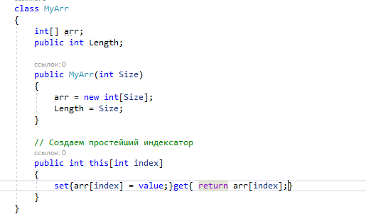
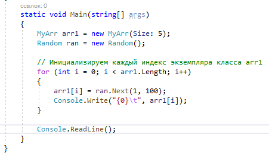
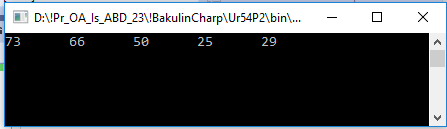

Программисты хорошо знакомы с процессом доступа к индивидуальным элементам, содержащимся в стандартных массивах, через операцию индекса ([]).
В C# имеется возможность проектировать
специальные классы и структуры, которые могут быть индексированы подобно стандартному массиву, посредством определения индексатора. Это конкретное языковое средство наиболее полезно при создании специальных типов коллекций (обобщенных и необобщенных).
Одномерные индексаторы
Ниже приведена общая форма одномерного индексатора:
где тип_элемента обозначает конкретный тип элемента индексатора.
Следовательно, у каждого элемента, доступного с помощью индексатора, должен быть определенный
тип_элемента.
Этот тип соответствует типу элемента массива.
Параметр индекс получает конкретный индекс элемента, к которому осуществляется доступ. Формально этот параметр совсем не обязательно должен иметь тип int, но поскольку
индексаторы, как правило, применяются для индексирования массивов, то чаще всего используется целочисленный тип данного параметра.
В теле индексатора определены два аксессора (т.е. средства доступа к данным):
Аксессор подобен методу, за исключением того, что
в нем не объявляется тип возвращаемого значения или параметры.
Аксессоры вызываются автоматически при использовании индексатора, и оба получают индекс в качестве параметра.
Так, если индексатор указывается в левой части оператора присваивания, то вызывается аксессор set
и устанавливается элемент, на который указывает параметр индекс.
В противном случае вызывается аксессор get и возвращается значение, соответствующее параметру индекс.
Кроме того, Давайте рассмотрим пример:

Обращение е к массиву

Результат:
 В текущем классе MyArr определен индексатор, позволяющий вызывающему коду идентифицировать подэлементы с применением числовых значений. Однако надо понимать, что это не обязательное требование метода-индексатора. Следует особо подчеркнуть, что индексатор совсем не обязательно должен оперировать массивом. Его основное назначение — предоставить пользователю функциональные возможности, аналогичные массиву. На применение индексаторов накладываются два существенных ограничения. Во-первых, значение, выдаваемое индексатором, нельзя передавать методу в качестве параметра ref или out, поскольку в индексаторе не определено место в памяти для его хранения. Во-вторых, индексатор должен быть членом своего класса и поэтому
не может быть объявлен как static.тип_элемента this[int индекс] {
// Аксессор для получения данных,
get {
// Возврат значения, которое определяет индекс.
}
// Аксессор для установки данных,
set {
// Установка значения, которое определяет индекс.
}}
Многомерные индексаторы
Можно также создавать индексатор, принимающий несколько параметров:

Обращение е к массиву